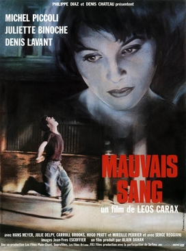

Leos Carax
1986
116 minutes
You watched this Leos Carax on the strong recommendation of a friend who is a huge fan of Denis Lavant. It's a bit like a very scattered David Cronenberg plot attached to the fact that Denis Lavant is going to bust out dance moves at some point and do things like flip over cars and go iconically running through the streets of Paris while "Modern Love" by David Bowie plays.
You're more familiar with the Carax-Lavant pair-up in Holy Motors which will come later, but this is an early curiosity with an extremely iconic and influential scene. It doesn't otherwise push your buttons, but it's worth the watch.
Time to choose something different: